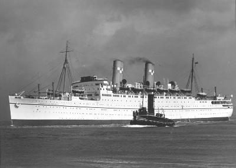
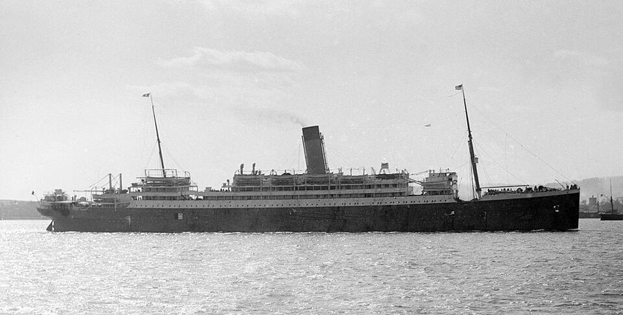
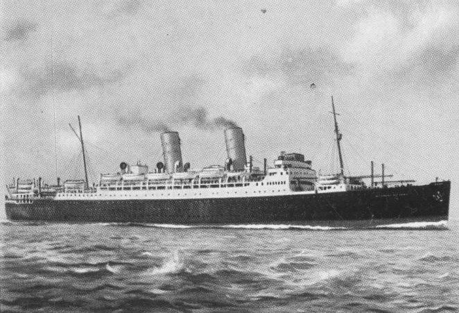
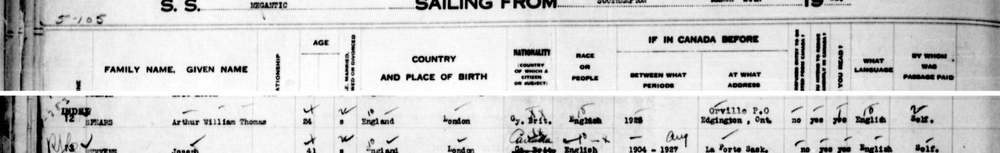
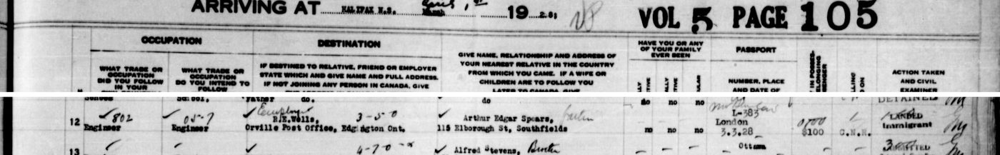
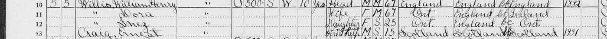

Born in London
Arthur was born on 4 March 1904 in east London. His birth was registered in the West Ham district in the spring of 1904, under the names Arthur William T. W. Spears.
His father, Arthur Edgar Spears, was born in 1884 in Aston, Birmingham. He married in West Ham at the end of 1903, a few months before Arthur was born. The marriage index points to his bride as Marie Minnie Wells. Family records still need to confirm that, but every other clue fits.
By the 1920s the family lived at 115 Elborough Street, Southfields, in south-west London. A Marie M. Spears, aged 41, died in Wandsworth, the district that includes Southfields, early in 1926.
The family remembers him as "Arthur Thomas William Edgar". The records give "Arthur William T. W." (birth index), "Arthur William Thomas" (1928 ship's list) and "Arthur T." (headstone). "Edgar" was his father's middle name. The last "W." in the birth index may be Wells, his mother's maiden name.
Three Atlantic crossings
In the 1920s thousands of young British men emigrated to Canada for work. Arthur made the crossing at least three times.
-

26 June 1925
Empress of France → Quebec
Arthur Spears, 20, English, lands at Quebec. This is his first arrival in Canada.
-

1 April 1928
Megantic, Southampton → Halifax
He returns after a visit home, aged 24, single, an engineer with $100 in his pocket. He paid his own passage and was admitted as a landed immigrant.
-

22 April 1934
Duchess of York → Halifax
Arthur Spears (indexed as "Speara"), 30, English, lands at Halifax again.
Ship photographs: Wikimedia Commons, public domain (Empress of France, Megantic, Duchess of York).




Orrville, Parry Sound District
The 1928 manifest shows that Arthur had been working near Orrville, a small settlement in Christie Township about 23 km east of Parry Sound. The village was first called Edgington and later renamed after its first settler, John Orr. His employer was R. E. Wells.
The surname matters. If Arthur's mother was a Wells, R. E. Wells may have been a relative. The 1931 census shows a Robert Wells, born in England about 1890 and in Canada since 1910, farming in Christie Township with his wife Louisa and their children. One of his sons was named Edgar. Whether Robert was Arthur's uncle is still a theory.
Arthur doesn't appear in Christie Township in the 1931 census, and he hasn't yet been found anywhere else that year.
Marriage and family
On 30 April 1936 Arthur married Inez Beatrice Willis in Hamilton Township, Northumberland County, just north of Cobourg.
Inez was born on 15 June 1905 in Northumberland County, the youngest daughter of William Henry Willis and Susan Dora (Cook) Willis. Her father had come from England in 1882. In the 1931 census Inez, 25, was living at home on the family's general farm in Hamilton Township: a ten-room wooden house the family owned, with a radio.

Arthur and Inez had three sons: Clayton Arthur, born in Cobourg on 17 July 1940, Ron and Wayne.
Where Arthur worked in Northumberland, his trade as an engineer, and family stories are still to be added.
Resting place
Arthur died in Northumberland County in March 1984, around his 80th birthday. Inez died in Cobourg on 1 January 1994. They are buried together at Camborne United Church Cemetery, north of Cobourg, under a shared stone:
SPEARS
Headstone, Camborne United Church Cemetery. See the photo on Find a Grave ↗
Arthur T. 1904–1984 · Inez B. 1905–1994
Timeline
- Late 1903Arthur Edgar Spears marries in West Ham, London.
- 4 Mar 1904Arthur is born in east London.
- 26 Jun 1925Lands at Quebec on the Empress of France, aged 20.
- 1925–1928Works near Orrville, Parry Sound District.
- Early 1926Marie M. Spears, probably his mother, dies in Wandsworth, London.
- 1 Apr 1928Returns to Canada on the Megantic as an engineer, bound for R. E. Wells at Orrville.
- 22 Apr 1934Lands at Halifax on the Duchess of York.
- 30 Apr 1936Marries Inez Beatrice Willis in Hamilton Township, Northumberland.
- 17 Jul 1940Son Clayton Arthur is born in Cobourg.
- 19__Sons Ron and Wayne are born.
- Mar 1984Arthur dies in Northumberland County, around his 80th birthday.
- 1 Jan 1994Inez dies in Cobourg. They are buried together at Camborne.
Records & sources
England
- Birth: Spears, Arthur William T. W., West Ham, Apr–Jun quarter 1904, vol. 4a p. 294. GRO index via FreeBMD ↗
- Birth: Spears, Arthur Edgar, Aston, Jul–Sep quarter 1884, vol. 6d p. 384. GRO index via FreeBMD.
- Marriage: Spears, Arthur Edgar, West Ham, Oct–Dec quarter 1903, vol. 4a p. 130. Women on the same index page: Marie Minnie Wells and Emma Elizabeth A. Hurst. GRO index via FreeBMD.
- Death: Spears, Marie M., 41, Wandsworth, Jan–Mar quarter 1926, vol. 1d p. 727. GRO index via FreeBMD.
- Death (possible father): Spears, Arthur E., 70, Surrey N.E., Jan–Mar quarter 1955, vol. 5g p. 676. GRO index via FreeBMD.
Passenger lists (Library and Archives Canada)
- 26 Jun 1925, Empress of France, Quebec: Spears, Arthur, 20. RG76-C-1-a, vol. 6, reel T-14716, p. 187. Record ↗
- 1 Apr 1928, Megantic, Halifax: Spears, Arthur W. T., 24. RG76-C-1-b, vol. 5, reel T-14814, p. 105. Record ↗ · Page image ↗
- 22 Apr 1934, Duchess of York, Halifax: Speara, Arthur, 30. RG76-C-1-b, vol. 3, reel T-14834, p. 107. Record ↗
Census (Library and Archives Canada)
- 1931, Hamilton Township, Northumberland: Willis household with Inez, 25. Item 80863685. Record ↗
- 1931, Christie Township, Parry Sound: Robert Wells, 41, born in England, farmer. Item 81162043. Record ↗
Ontario
- Find a Grave: Arthur Thomas Spears ↗ and Inez Beatrice Willis Spears ↗, Camborne United Church Cemetery. The memorials give the 1936 marriage and Inez's parents. Her memorial says 1995, but the headstone and the death notice give 1994.
- Cobourg Daily Star, 4 Jan 1994, p. 8, col. 6: death notice of Inez B. (Willis) Spears. Cobourg Newspaper Index ↗
- Obituary of Clayton Arthur Spears, 2025: born in Cobourg on 17 July 1940 "to Art and Inez Spears", brothers Ron and Wayne. Haldimand Press ↗
Still to find
- Arthur's 1984 obituary in the Cobourg Daily Star. The Cobourg Public Library can copy it.
- The 1936 Ontario marriage registration, which names both sets of parents.
- The England 1911 and 1921 censuses, showing Arthur's childhood household in London.
- Where Arthur was living in 1931, and his work in Northumberland.
- Any Second World War service.